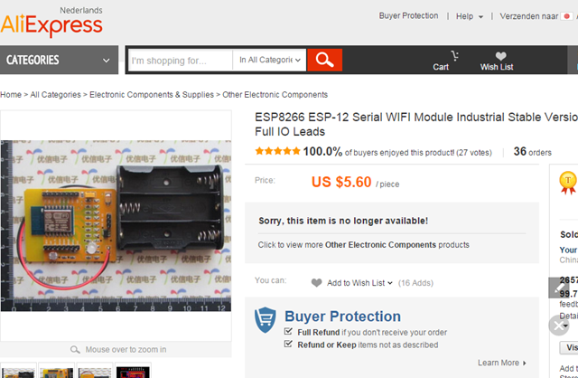
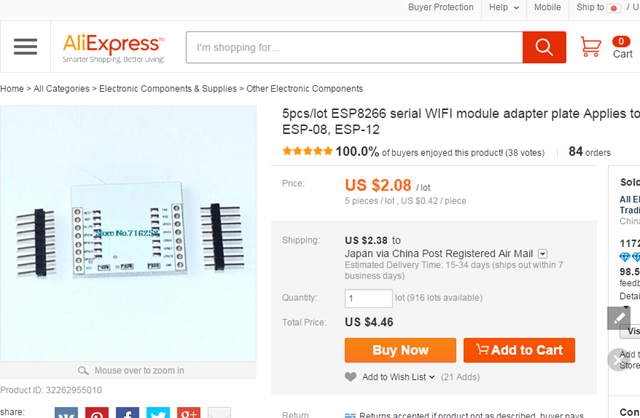
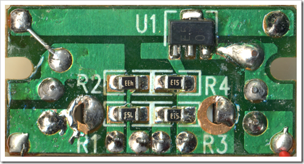
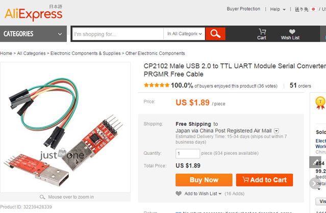

ＵＳでは合法で、月１０ドルくらいのサービスですが、

まぁ、すばらしい。音楽の鑑賞のスタイルを変えてくれる。
iPad,iPhoneを持ってるなら、9.99ドルのサービスが絶対いい。友達と一緒に、あるいは家族で支払いはメインアカウントからやるなら、17.99ドルのサービスがお得。
実は、今回クリスマスプレゼントにかみさんに、これをプレゼントしました。
後発だけあって、pandora radio や las.fmにはない素晴らしさと便利さがある。
とりあえず、研究結果として見解だけ書いておきます。
結論。もう曲をダウンロードする価値がなくなりつつある。洋楽がメインの人でipad,iphone,ipodから音楽聴いてる人はここがいい。ＰＣだけのひとでも4.99ドルは破格。
それでね、pandora radioと同等な聴き方したいなら、rdio.comアカウントにログインしてブラウザから
公式のＡＰＩ紹介からのもので、知ってるアーティストから似た系統の新しい音楽やアーティストを発掘するときとかすごくシンプルで便利で、最高。
今から、音楽たのしみたいなら、ここがいいよ。
iPhoneでＪＢユーザか、Android端末なら、
で、Grooveshark Anywhere 月５ドル年間５０ドルキャンペーン価格、もいいかもだけど。

アプリは

ここに詳しく乗ってます。
http://ameblo.jp/newcomer-t/entry-11096026577.html
デスクトップアプリもなかなか良く出来ていて、直感的に操作できると思う。
実は、僕は全部有料会員なんです。
last.fm 3ドル/月 paypal経由
rdio.com 家族で１８ドル/月 master card JP経由
pandora.com 3.99ドル/月 itunesＵＳ経由
grooveshark.com ５ドル/月 paypal経由
年末で、音楽のライフサイクルを今後どうするかじっくり検討してみますわ。他もあるけどだいたい、この４つでどれが良くて、どんなメリットがあるのか研究してみます。
さぁ、年末年始は、音楽三昧で過ごしましょう！